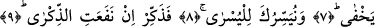
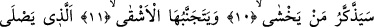
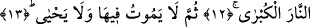

ÖĞÜT FAYDA VERİRSE
ÖĞÜT VER
6. Sana (Kur’an’ı) okutacağız, sen de hiç unutmayacaksın.
7. Artık Allah’ın dilediği hariç. Şüphesiz Allah açığı da bilir, gizleneni de.
8. Seni en kolaya muvaffak kılacağız.
9. O halde eğer öğüt fayda verirse öğüt ver.
10. (Allah’tan) korkan öğütten yararlanacak.
11. Kötü kimse ise öğütten kaçınır.
12. Ki o en büyük ateşe girecektir.
13. Sonra o orada ne ölür, ne de yaşar.
Bu cümle Allah’ın, bütün mahlukatına genel hidâyetinin ifâdesinin ardından
Peygamber (s.a.) Efendimiz’e özel hidâyetini beyân eden bir cümledir. Allah’ın bu
hidâyeti Peygamber Efendimiz’in (s.a.) vahyi alması ve bütün âlemlere hidâyet olan
Kur’an’ı ezberlemesi ve bütün insanlara doğru yolu göstermekte Allah tarafından
başarılı kılınmasıdır.
Rağıb Isfahânî Müfredat isimli eserinde diyor ki: Bu âyet-i kerime Allah tarafından
Peygamber (s.a.) Efendimiz’e Hak’tan işitecek olduğu şeyleri unutmayacak bir biçimde
kılındığına dâir bir haber ve bir garantidir.
Âyetin başındaki sin harfi, ya mânâyı pekiştirmek için getirilmiştir ya da gelecek
zaman ifâde etmek içindir. Çünkü ikinci ihtimale göre âyetin getirilmesinden maksad;
Peygamber Efendimiz’e o esnâda vahyedilen ve daha sonra vahyedilecek âyetleri
okutmaktır. Bu ise; “okutma vaadi” içinde vahyin sürüp gideceğine dâir verilmiş ilahi
ve şerefli bir vaad demektir. Arapçada Kur’an okuyana “kari’” denilir. Başkasını
okutana “mukri’” ismi verilir.
Tâcu’l-masâdîr’de el-İkrâ’ “Kur’ân’a kulak vermek, eğilmek; okumak tâlim etmek.”
şeklinde açıklanmıştır.
Bu açıklamaların ışığı altında şöyle deriz: Biz Cebrâil’in diliyle şu anda sana
vahyettiklerimizi ve daha sonra vahyedeceklerimizi sana okutacağız ve sen hafıza
gücünden ve bu işi sağlam yapmaktan dolayı okuduklarını asla unutmayacaksın.
Keşfu’l-esrar’da bu âyete şöyle bir mânâ veriliyor: Biz Kur’an’ın ezberlenmesini